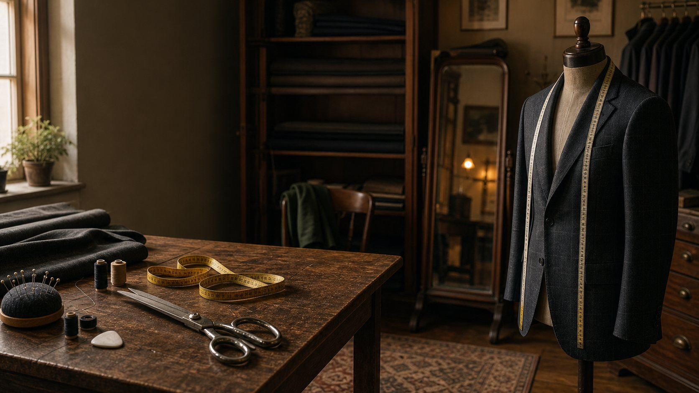
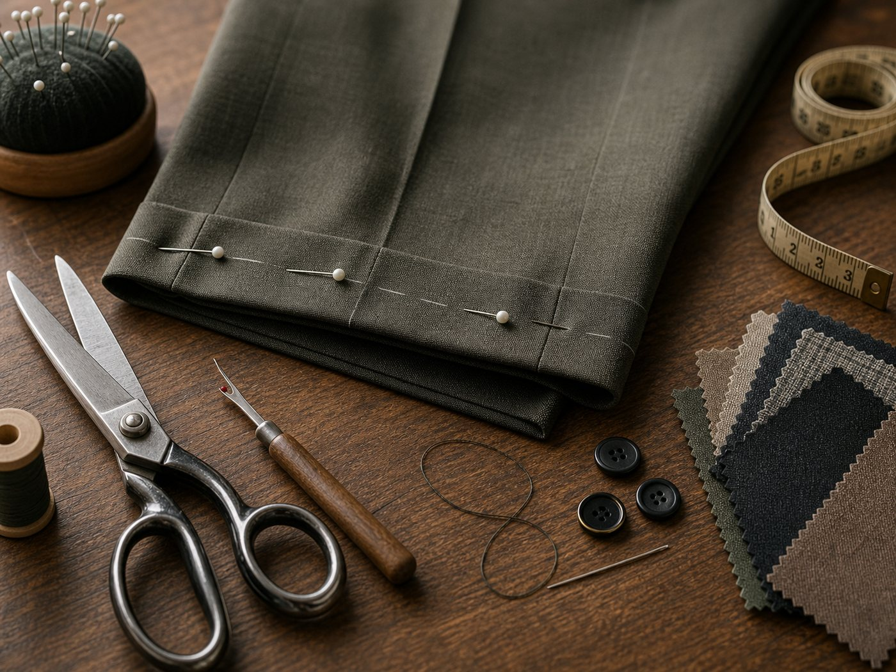
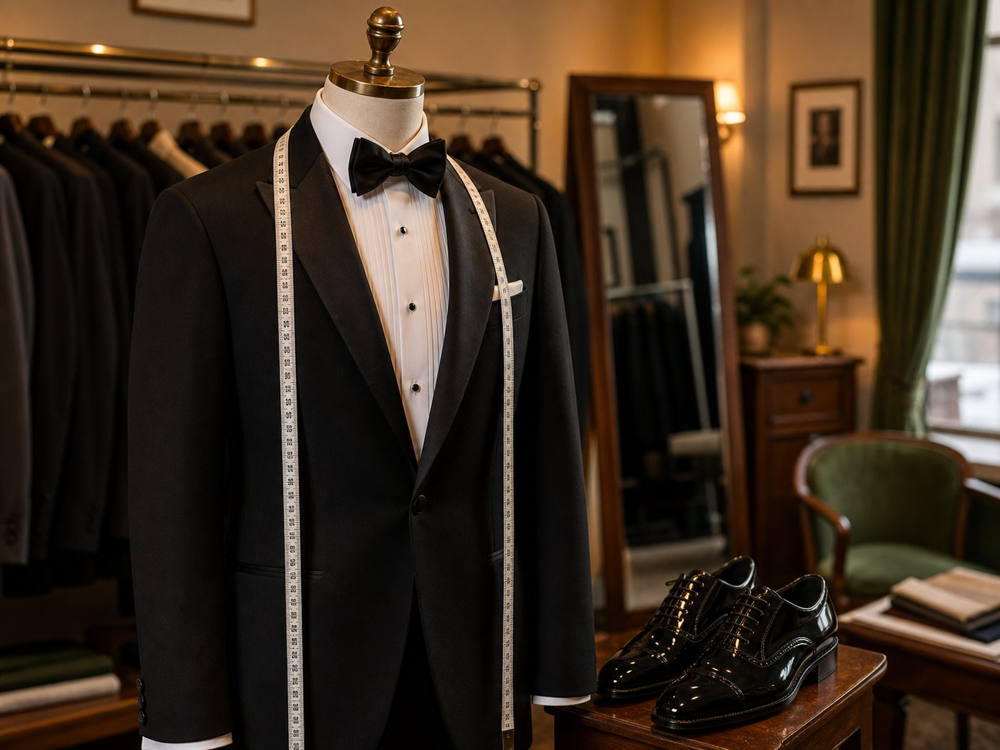

Alterations
Hems, waists, tapering, sleeves, zippers, buttons, and resizing.

Gabriel’s Tailoring & Tuxedo in Holden
Bring in everyday repairs, suit adjustments, or tuxedo rental questions. For wedding parties and time-sensitive fittings, phone the shop first.
alterations, repairs, and fit adjustments
rentals measured and finalized in the shop
Mon-Thu 9-6:30, Fri 9-5, Sat 9-2

Alterations
Hems, sleeves, waists, zippers, buttons, and repairs are handled with the same eye for fit as formalwear.
Services
Hems, waists, tapering, sleeves, zippers, buttons, and resizing.
Jackets, shirts, trousers, dresses, coats, and uniforms adjusted for a cleaner fit.
Fittings, pressing, and pickup guidance for time-sensitive events.
Tuxedos, shirts, shoes, vests, and accessories measured in-store.
Tuxedo Rentals
Choose from classic tuxedos, suits, dinner jackets, vests, shirts, shoes, and accessories. Gabriel’s helps with sizing, timing, and pickup details.
Use the catalog as a starting point. Measurements and final rental details happen with Gabriel’s.

Visit or Call
Walk-ins are welcome for everyday alterations. Call ahead for tuxedo rentals, wedding parties, suit sales, or anything with a close deadline.
Find Us
The shop is at 808 Main St in Holden, MA. Use the map for directions, or phone first for a rental, group fitting, or rush alteration.
Get DirectionsFAQ
Timing depends on the garment and the work needed. Bring the item in so Gabriel’s can look at it and give you a clearer answer.
Bring the garment and the shoes, shirt, or accessories you plan to wear with it when those details affect the fit.
Yes. Come in to get measured and finalize the rental details. Groups and tight timelines work best with a quick phone call first.
Yes. Use the JFW catalog online, then come in or call Gabriel’s to finish sizing, timing, and rental details.